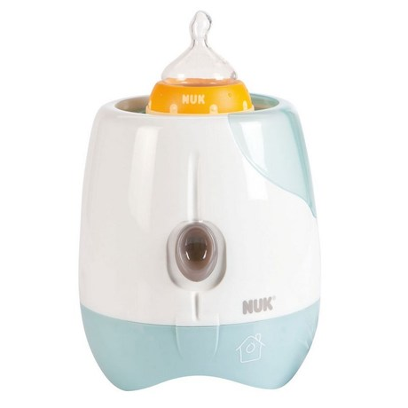

| Produit | Catégrie | Description | lien |
|
Poussette |
Poussette Gazelle S, aux multiples configurations (13) permettant d'accueillir un et jusqu'à trois enfants. Châssis noir |
lien vers le site | |
| Berceau |
Le berceau cododo MORPHEA vous permet de dormir avec bébé près de vous en toute sécurité. |
lien vers le site | |
| Biberon |
Biberon 150 ml avec tétine en silicone débit 1 (pour enfant de 0 à 6 mois). |
lien vers le site | |
| Babyphone YOO See | L’écoute bébé YOO See offre une vidéo de qualité numérique, avec l’option vision nocturne et une portée de 250m. | len vers le site | |
| Garçon | Kit de naissance 6 pièces Garçon | Habillez bébé avec ce kit dès sa naissance | lien vers le site |
| Bébécal | Il empêche bébé de se retourner sur le ventre. | lien vers le site | |
| Préparateur de biberon MILKEO Night Blue | Avec le distributeur automatique de biberon Milkeo de BEABA, préparer en un seul geste le biberon de votre bébé. | le lien vers le site | |
| Couverture 100x140 cm Veloudoux Anna et Milo | La couverture 100 x 140cm en Veloudoux® bicolore écru et gris étoilé de la collection Anna Milo avec ses personnages tendres brodés garantit une grande douceur et infinie tendresse. | le lien vers le site | |
|  | Chauffe-biberon Thermo Rapid Maison | Anneau accélérateur de chauffe. Arrêt automatique du cycle. Dosette eau intégrée. Évolutif : Compatible avec tous les formats de biberons et chauffe les petits pots grâce à un panier spécial | lien vers le site |
 |
Couffin souple dodo nomade chouette | Couffin dodo nomade chouette | le lien vers le site |
| Siege auto gr0+ GEMM Foggy Gray | LA COQUE INDISPENSABLE, AVEC OPTION ISOFIX. CE COMPAGNON MALIN DES POUSSETTES JOIE EST UN PETIT COCON DE SÛRETÉ POUR LES SORTIES À PIEDS OU EN VOITURE | le lien vers le site | |
| Chaise haute Cookie | Plateau double amovible réglable (3 positions), porte-gobelet intégré et panier amovible pour garder les objets de bébé à proximité | lien vers le site | |
| Tapis Lumi des P'tits Copains | Un grand tapis avec plein de surprises à manipuler pour bébé ! Évolutif avec ses arches amovibles, ce tapis riche en activités s’adapte aux différents stades de développement de l’enfant | le lien vers le site | |
 |
Baignoire 0 6 mois transat intégré bleu | Cette baignoire a été spécialement conçue pour les premiers mois de bébé (0-6 mois). | le lien vers le site |
| Trousse de soin bébé | Le kit de santé et de toilette pour bébé closer to nature contient 9 articles essentiels. | le lien vers le site |